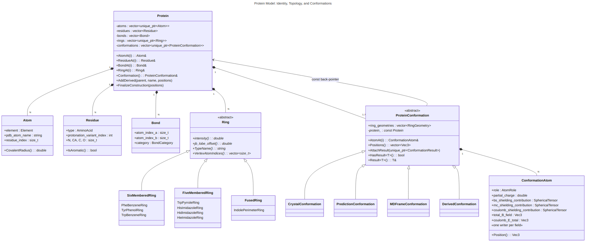
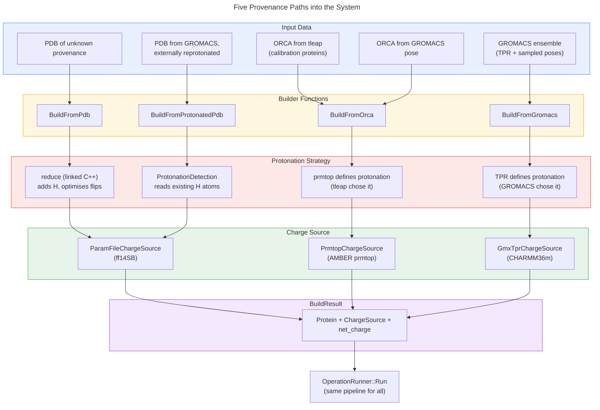
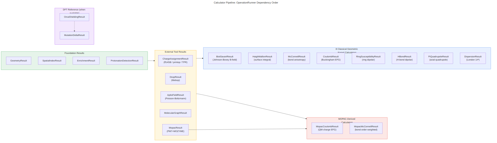
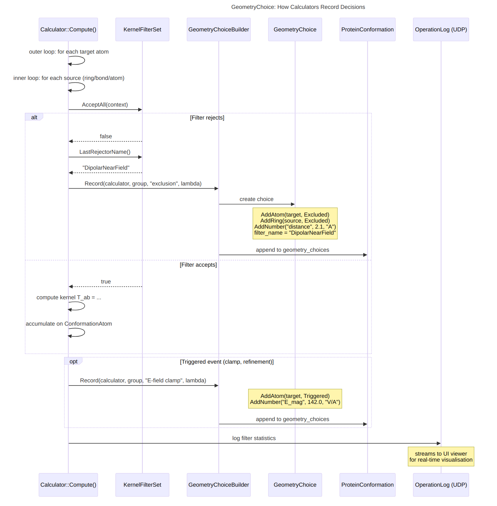

System Architecture
Every claim here is derived from headers in src/ and
verified against the test suite (287 tests, 0 failures).
See C++ API docs for full class-level
UML with collaboration graphs.




1. Protein Model
A Protein holds what a molecule is, independent
of geometry. It owns atoms, residues, bonds (classified by
BondCategory enum), and rings (typed class hierarchy, not
string annotations).
Protein is non-movable and non-copyable — the
back-pointer safety guarantee. Conformations hold a raw
const Protein* valid for the Protein's lifetime.
Conformations
A ProteinConformation is one geometric instance.
Positions are const after construction. Four typed subclasses record provenance:
| Type | Created by | Metadata |
|---|---|---|
| CrystalConformation | BuildFromPdb | resolution, R-factor, temperature |
| PredictionConformation | BuildFromOrca | method, confidence |
| MDFrameConformation | BuildFromGromacs | walker, time, Boltzmann weight |
| DerivedConformation | Protein::AddDerived | description string |
Ring Type Hierarchy
Ring types are classes, not data. Calculator code is
ring-type-agnostic: ring.Intensity(),
ring.JBLobeOffset(). No switch statements on ring type.
Eight types in three size categories: PheBenzene, TyrPhenol, TrpBenzene (6-membered); TrpPyrrole, HisImidazole, HidImidazole, HieImidazole (5-membered); IndolePerimeter (fused 9-atom). The three histidine variants encode protonation state in the type system.
2. Provenance Paths
Five kinds of data enter the system. Each has a different protonation
strategy and charge source. All produce the same
BuildResult: a Protein, a ChargeSource, and a net charge.
After building, OperationRunner::Run processes every
protein identically.
| Path | Builder | Protonation | Charges |
|---|---|---|---|
| Bare PDB | BuildFromPdb | reduce (rebuilds H at pH) | ff14SB |
| Pre-protonated PDB | BuildFromProtonatedPdb | existing H atoms kept | ff14SB |
| ORCA (tleap) | BuildFromOrca | tleap chose | prmtop |
| ORCA (GROMACS) | BuildFromOrca | tleap chose | prmtop |
| GROMACS ensemble | BuildFromGromacs | TPR topology | CHARMM36m |
The ChargeSource hierarchy enforces convergence:
ParamFileChargeSource (ff14SB), PrmtopChargeSource (AMBER),
GmxTprChargeSource (GROMACS), PreloadedChargeSource (pre-read).
3. Calculator Pipeline
OperationRunner::Run sequences all results in dependency
order. It does not hold state or decide what to compute.
Tier 0: Foundation
| Result | Provides |
|---|---|
| GeometryResult | Ring geometry (SVD normals), bond geometry |
| SpatialIndexResult | 15Å neighbour lists (nanoflann k-d tree) |
| EnrichmentResult | AtomRole, hybridisation, boolean properties |
| ChargeAssignmentResult | Per-atom charges from ChargeSource |
| DsspResult | Secondary structure, φ/ψ, SASA, H-bonds |
| ApbsFieldResult | Solvated E-field and EFG (Poisson-Boltzmann) |
| MopacResult | PM7 Mulliken charges, Wiberg bond orders |
Tier 1: Classical Geometric Kernel Calculators
Eight calculators, each producing full rank-2 tensor output
(Mat3 + SphericalTensor) at every atom.
A SphericalTensor holds the irreducible decomposition:
T0 (1 component), T1 (3 components), T2 (5 components).
| Calculator | Physical Effect | Source |
|---|---|---|
| Biot-Savart | Ring current (double-loop wire) | Ring vertices |
| Haigh-Mallion | Ring current (surface integral) | Ring face |
| McConnell | Bond magnetic anisotropy | Bond midpoints |
| Coulomb | Electric field gradient | All charges |
| Ring Susceptibility | Whole-ring diamagnetic susceptibility | Ring centers |
| H-bond Dipolar | H-bond dipolar tensor | DSSP H-bond pairs |
| Pi-Quadrupole | π-electron EFG (Stone T-tensor) | Ring centers |
| Dispersion | van der Waals 1/r6 | Ring vertices |
Two additional MOPAC-derived calculators use the same geometric kernels with quantum-chemical weights: MopacCoulomb (PM7 Mulliken charges) and MopacMcConnell (Wiberg bond order weighting).
See the Geometric Kernel Catalogue for full mathematical derivations.
4. Filters and GeometryChoice
Every calculator holds a KernelFilterSet.
Before computing a kernel, the calculator builds a
KernelEvaluationContext and passes it to
AcceptAll(). All five filters must accept:
| Filter | Criterion | Physics |
|---|---|---|
| MinDistanceFilter | distance ≥ 0.1 Å | 1/rn divergence |
| DipolarNearFieldFilter | distance > extent/2 | Multipole expansion invalid inside source |
| SelfSourceFilter | atom ≠ source | Field undefined at source |
| SequentialExclusionFilter | seq. separation ≥ 2 | Through-bond dominates |
| RingBondedExclusionFilter | not bonded to ring | Through-bond, not through-space |
GeometryChoice Recording
During Compute(), calculators record geometric decisions
via GeometryChoiceBuilder: which entities were involved,
their roles and outcomes, named numbers with units, which filter
rejected if any, and an optional field sampler for UI visualisation.
5. Feature Export
Each ConformationResult implements
WriteFeatures(). The full tensor data (geometric kernels
+ DFT reference when available) is exported as NPY arrays.
The Python SDK provides typed access
to these arrays with e3nn.o3.Irreps, torch.Tensor,
and numpy access.
Key Entry Points
| Header | Purpose |
|---|---|
Protein.h | Sequence, topology, conformation ownership |
ProteinConformation.h | Positions, ConformationAtom, result attachment |
ConformationAtom.h | All per-atom computed fields (one writer each) |
BuildResult.h | Common output of all builders |
OperationRunner.h | Run, RunMutantComparison, RunEnsemble |
ChargeSource.h | Four typed charge source implementations |
KernelEvaluationFilter.h | Five filters, KernelFilterSet |
Ring.h | Ring type hierarchy (8 types, 3 size categories) |
Types.h | Vec3, Mat3, SphericalTensor, all enums |